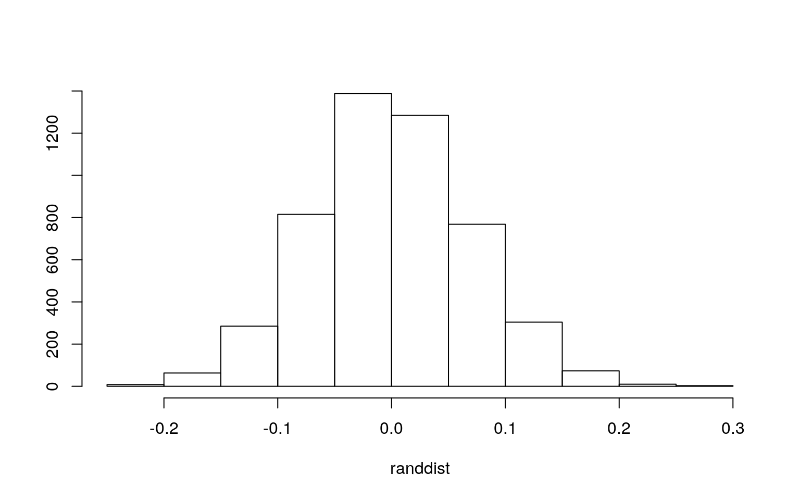
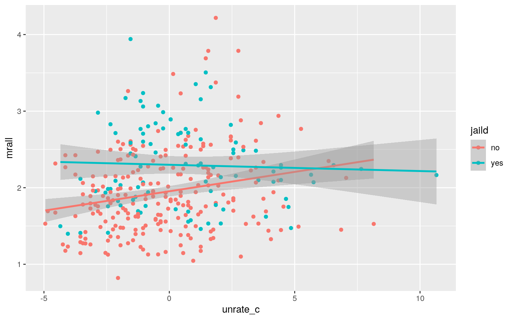
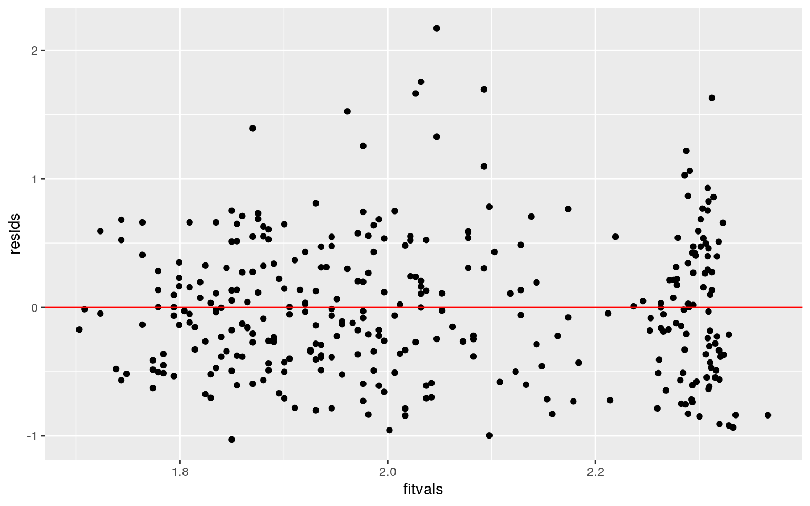
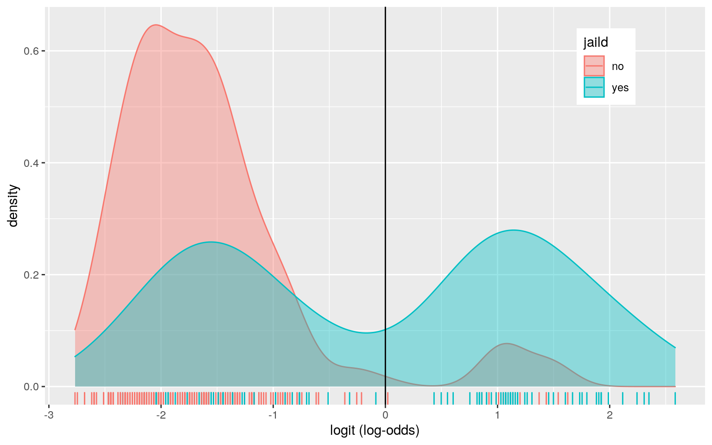
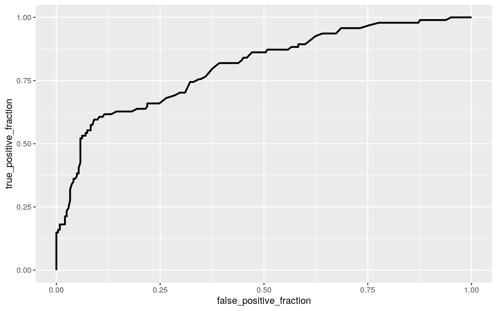

The dataset I'm using exhibits the drunk driving laws and traffic deaths. From the 'Fatality' dataset, there were a total of 11 variables and 336 observations. Three variables were removed including the state ID code, the year, and a duplicate column of the observations. The remaining variables are 'mlda, mrall, beertax, vmiles, unrate, perinc, comserd, and jaild.' The variable 'mlda' is the minimum legal drinking age, 'mrall' is traffic fatality rate (deaths per 10000), 'beertax' is the tax on case of beer, 'vmiles' is average miles per driver, 'unrate' is unemployment rate, 'perinc' is per capita personal income, 'comserd' is mandatory community service, and 'jaild' is mandatory jail sentence.
library(lmtest)
library(dplyr)
library(tidyverse)
library(sandwich)
library(plotROC)
fatality <- read.csv("/stor/home/utl243/Fatality.csv")
fatality2 <- fatality %>% select(-1, -2, -3)
fatality2 <- fatality2[, c(3, 1:2, 6:8, 5, 4)]
fatality3 <- fatality2
head(fatality2)## mlda mrall beertax vmiles unrate perinc comserd jaild
## 1 19.00 2.12836 1.539379 7.233887 14.4 10544.15 no no
## 2 19.00 2.34848 1.788991 7.836348 13.7 10732.80 no no
## 3 19.00 2.33643 1.714286 8.262990 11.1 11108.79 no no
## 4 19.67 2.19348 1.652542 8.726917 8.9 11332.63 no no
## 5 21.00 2.66914 1.609907 8.952854 9.8 11661.51 no no
## 6 21.00 2.71859 1.560000 9.166302 7.8 11944.00 no nolibrary(rstatix)
group <- fatality2$jaild
DVs <- fatality2 %>% select(mlda, mrall, beertax, vmiles, unrate,
perinc)
# Test multivariate normality for each group (null:
# assumption met)
sapply(split(DVs, group), mshapiro_test)## no yes
## statistic 0.4553902 0.8078793
## p.value 1.456078e-26 1.006677e-09# MANOVA
man3 <- manova(cbind(mlda, mrall, beertax, vmiles, unrate, perinc) ~
jaild, data = fatality2)
summary(man3)## Df Pillai approx F num Df den Df Pr(>F)
## jaild 1 0.10816 6.6504 6 329 1.181e-06 ***
## Residuals 334
## ---
## Signif. codes: 0 '***' 0.001 '**' 0.01 '*' 0.05 '.' 0.1 ' ' 1# one-way ANOVAs
summary.aov(man3)## Response mlda :
## Df Sum Sq Mean Sq F value Pr(>F)
## jaild 1 3.248 3.2479 4.0551 0.04484 *
## Residuals 334 267.515 0.8009
## ---
## Signif. codes: 0 '***' 0.001 '**' 0.01 '*' 0.05 '.' 0.1 ' ' 1
##
## Response mrall :
## Df Sum Sq Mean Sq F value Pr(>F)
## jaild 1 8.43 8.4302 28.021 2.179e-07 ***
## Residuals 334 100.48 0.3009
## ---
## Signif. codes: 0 '***' 0.001 '**' 0.01 '*' 0.05 '.' 0.1 ' ' 1
##
## Response beertax :
## Df Sum Sq Mean Sq F value Pr(>F)
## jaild 1 0.107 0.10741 0.4697 0.4936
## Residuals 334 76.385 0.22870
##
## Response vmiles :
## Df Sum Sq Mean Sq F value Pr(>F)
## jaild 1 3.65 3.6483 1.6788 0.196
## Residuals 334 725.84 2.1732
##
## Response unrate :
## Df Sum Sq Mean Sq F value Pr(>F)
## jaild 1 45.67 45.674 7.2491 0.007451 **
## Residuals 334 2104.40 6.301
## ---
## Signif. codes: 0 '***' 0.001 '**' 0.01 '*' 0.05 '.' 0.1 ' ' 1
##
## Response perinc :
## Df Sum Sq Mean Sq F value Pr(>F)
## jaild 1 39976632 39976632 8.0408 0.004852 **
## Residuals 334 1660556260 4971725
## ---
## Signif. codes: 0 '***' 0.001 '**' 0.01 '*' 0.05 '.' 0.1 ' ' 1# post-hoc t tests
pairwise.t.test(fatality2$mlda, fatality2$jaild, p.adj = "none")##
## Pairwise comparisons using t tests with pooled SD
##
## data: fatality2$mlda and fatality2$jaild
##
## no
## yes 0.045
##
## P value adjustment method: nonepairwise.t.test(fatality2$mrall, fatality2$jaild, p.adj = "none")##
## Pairwise comparisons using t tests with pooled SD
##
## data: fatality2$mrall and fatality2$jaild
##
## no
## yes 2.2e-07
##
## P value adjustment method: nonepairwise.t.test(fatality2$beertax, fatality2$jaild, p.adj = "none")##
## Pairwise comparisons using t tests with pooled SD
##
## data: fatality2$beertax and fatality2$jaild
##
## no
## yes 0.49
##
## P value adjustment method: nonepairwise.t.test(fatality2$vmiles, fatality2$jaild, p.adj = "none")##
## Pairwise comparisons using t tests with pooled SD
##
## data: fatality2$vmiles and fatality2$jaild
##
## no
## yes 0.2
##
## P value adjustment method: nonepairwise.t.test(fatality2$unrate, fatality2$jaild, p.adj = "none")##
## Pairwise comparisons using t tests with pooled SD
##
## data: fatality2$unrate and fatality2$jaild
##
## no
## yes 0.0075
##
## P value adjustment method: nonepairwise.t.test(fatality2$perinc, fatality2$jaild, p.adj = "none")##
## Pairwise comparisons using t tests with pooled SD
##
## data: fatality2$perinc and fatality2$jaild
##
## no
## yes 0.0049
##
## P value adjustment method: none# probability type I error
1 - (1 - 0.05)^13## [1] 0.4866579# Boneferroni adjusted rate
0.05/13## [1] 0.003846154A one-way MANOVA was conducted to determine the effect of whether there is a mandatory jail sentence on six dependent variables (mlda, mrall, beertax, vmiles, unrate, and perinc). With a null that the assumption is met, multivariate normality of each group revealed not be met with p<0.05 for both groups. There was a total of 1 MANOVA, 6 ANOVAs, and 6 t-tests. There is a probability of 0.4866579 that I have made at least one type I error. The Bonferroni adjusted rate I should be using to keep the overall type I error rate at .05 is 0.003846154. Significant differences were found among whether there is a mandatory jail sentence for at least one of the dependent variables, P illai trace = .11, pseudo F (6, 329) = 6.65, p < 0.0038. Univariate ANOVAs for each dependent variable were conducted as follow-up tests to the MANOVA, using the Bonferroni method for controlling Type I error rates for multiple comparisons. The univariate ANOVAs for mrall were also significant, F (1, 334) = 28.021, p < 0.0038). Post hoc analysis was performed conducting pairwise comparisons to determine whether or not there is a mandatory jail sentence differed in mrall. Yes and no mandatory jail sentence were found to differ from each other in terms of mrall after adjusting for multiple comparisons (bonferroni α = .05/13 = .0038).
set.seed(348)
fatality2 %>% group_by(jaild) %>% summarize(means = mean(mrall)) %>%
summarize(`mean_diff:` = diff(means)) %>% glimpse()## Rows: 1
## Columns: 1
## $ `mean_diff:` <dbl> 0.3528725randdist <- vector()
for (i in 1:5000) {
new <- data.frame(mrall = sample(fatality2$mrall), jaild = fatality2$jaild)
randdist[i] <- mean(new[new$jaild == "yes", ]$mrall) - mean(new[new$jaild ==
"no", ]$mrall)
}
{
hist(randdist, main = "", ylab = "")
abline(v = c(-0.3528725, 0.3528725), col = "red")
}
mean(randdist > 0.3528725 | randdist < -0.3528725)## [1] 0The actual observed mean difference between whether there is jail sentence (jaild) and traffic fertility rate (mrall) is 0.3528725. The randomization test with a mean difference statistic was performed. A p-value of 0 was the outcome. Looking at the graph, there is a probability of 0 of observing a mean difference as extreme as the one under the randomization distribution. There are no ablines present on the graph.
# linear regression with interation
fatality3$unrate_c <- fatality3$unrate - mean(fatality3$unrate,
na.rm = T)
fit <- lm(mrall ~ unrate_c * jaild, data = fatality3)
summary(fit)##
## Call:
## lm(formula = mrall ~ unrate_c * jaild, data = fatality3)
##
## Residuals:
## Min 1Q Median 3Q Max
## -1.02855 -0.38796 -0.04779 0.34027 2.17069
##
## Coefficients:
## Estimate Std. Error t value Pr(>|t|)
## (Intercept) 1.95335 0.03488 56.008 < 2e-16 ***
## unrate_c 0.05061 0.01442 3.509 0.000511 ***
## jaildyes 0.34609 0.06682 5.179 3.87e-07 ***
## unrate_c:jaildyes -0.05880 0.02497 -2.355 0.019106 *
## ---
## Signif. codes: 0 '***' 0.001 '**' 0.01 '*' 0.05 '.' 0.1 ' ' 1
##
## Residual standard error: 0.5401 on 332 degrees of freedom
## Multiple R-squared: 0.1108, Adjusted R-squared: 0.1028
## F-statistic: 13.79 on 3 and 332 DF, p-value: 1.691e-08# regression plot
fatality3 %>% ggplot(aes(unrate_c, mrall, color = jaild)) + geom_point() +
geom_smooth(method = "lm")
# assumptions
resids <- lm(mrall ~ unrate_c * jaild, data = fatality3)$residuals
fitvals <- fit$fitted.values
ggplot() + geom_point(aes(fitvals, resids)) + geom_hline(yintercept = 0,
color = "red") #linearity
shapiro.test(resids) #normality##
## Shapiro-Wilk normality test
##
## data: resids
## W = 0.96829, p-value = 1.035e-06bptest(fit) #homoskedasticity##
## studentized Breusch-Pagan test
##
## data: fit
## BP = 12.909, df = 3, p-value = 0.004837# regression with robust standard errors
coeftest(fit, vcov = vcovHC(fit))##
## t test of coefficients:
##
## Estimate Std. Error t value Pr(>|t|)
## (Intercept) 1.953354 0.035870 54.4568 < 2.2e-16 ***
## unrate_c 0.050614 0.015025 3.3687 0.000844 ***
## jaildyes 0.346088 0.071635 4.8313 2.076e-06 ***
## unrate_c:jaildyes -0.058805 0.023244 -2.5299 0.011872 *
## ---
## Signif. codes: 0 '***' 0.001 '**' 0.01 '*' 0.05 '.' 0.1 ' ' 1A linear regression was performed predicting the traffic fatality rate (mrall) variable from the mean unemployment (unrate) variable and whether there is mandatory jail sentence (jaild) with interactions. The intercept means that the mean/predicted traffic fatality rate for states with no mandatory jail sentence with average unemployment rate is 1.95335. The coefficient ‘unrate_c’ means that the unemployment rate associated with traffic fatality rate for states with no mandatory jail sentence: for every 1-unit increase in unemployment rate, predicted traffic fatality rate goes up 0.05061 for this group. The coefficient ‘jaildyes’ means that states with mandatory jail sentence with average unemployment rate have predicted traffic fatality rate that is 0.34609 higher than states with no mandatory jail sentence with average unemployment rate. The coefficient ‘unrate_c:jailyes’ means that the slope of unemployment rate on traffic fatality rate for states with mandatory jail sentence is 0.0588 lower than for states with no mandatory jail sentence. Looking at the fitted values versus residuals plot, linearity is met. Normality is met using the Shapiro-Wilk test with a p-value<0.05. Homoskedasticity is met using the Breusch-Pagan test with a p-value<0.05. With the robust standard errors, there were no changes after the robust standard errors. All the coefficients are still significant with p-values<0.05 for each. A proportion of 0.1028 of the variation in the outcome is explained by the overall model.
fit <- lm(mrall ~ unrate_c * jaild, data = fatality3)
resids <- fit$residuals #save residuals
fitted <- fit$fitted.values #save yhats/predictions
resid_resamp <- replicate(5000, {
new_resids <- sample(resids, replace = TRUE) #resample resids w/ replacement
fatality3$new_y <- fitted + new_resids #add new resids to yhats to get new 'data'
fit <- lm(new_y ~ unrate_c * jaild, data = fatality3) #refit model
coef(fit) #save coefficient estimates (b0, b1, etc)
})
resid_resamp %>% t %>% as.data.frame %>% summarize_all(sd)## (Intercept) unrate_c jaildyes unrate_c:jaildyes
## 1 0.03432065 0.01431502 0.06541766 0.02480965After computing the bootstrapped standard errors by residuals, the coefficient ‘jailyes’ is no longer significant with p-value>0.05. The p-value of the coefficient ‘unrate_c’ is 0.01431502, which is higher than the robust SEs and original SEs. The p-value of the coefficient ‘unrate_c:jailyes’ is 0.02480965 which is higher than the robust SEs and original SEs.
# logistic regression
fit <- glm(jaild ~ comserd + unrate, data = fatality2, family = "binomial")
summary(fit)##
## Call:
## glm(formula = jaild ~ comserd + unrate, family = "binomial",
## data = fatality2)
##
## Deviance Residuals:
## Min 1Q Median 3Q Max
## -1.9004 -0.6269 -0.4888 0.5379 2.2585
##
## Coefficients:
## Estimate Std. Error z value Pr(>|z|)
## (Intercept) -3.27807 0.50393 -6.505 7.77e-11 ***
## comserdyes 3.07349 0.36517 8.417 < 2e-16 ***
## unrate 0.21288 0.05737 3.711 0.000207 ***
## ---
## Signif. codes: 0 '***' 0.001 '**' 0.01 '*' 0.05 '.' 0.1 ' ' 1
##
## (Dispersion parameter for binomial family taken to be 1)
##
## Null deviance: 398.31 on 335 degrees of freedom
## Residual deviance: 299.83 on 333 degrees of freedom
## AIC: 305.83
##
## Number of Fisher Scoring iterations: 4exp(coef(fit))## (Intercept) comserdyes unrate
## 0.03770103 21.61719832 1.23723760# confusion matrix
fatality2.1 <- fatality2 %>% mutate(prob = predict(fit, type = "response"),
prediction = ifelse(prob > 0.5, 1, 0))
fat2.1 <- fatality2.1 %>% transmute(prob, prediction, truth = jaild)
table(prediction = fat2.1$prediction, truth = fat2.1$truth) %>%
addmargins## truth
## prediction no yes Sum
## 0 227 45 272
## 1 15 49 64
## Sum 242 94 336# accuracy
(227 + 49)/336## [1] 0.8214286# sensitivity (TPR)
227/272## [1] 0.8345588# specificity (TNR)
49/64## [1] 0.765625# precision (PPV)
227/242## [1] 0.9380165# AUC
ROCplot <- ggplot(fat2.1) + geom_roc(aes(d = truth, m = prob),
n.cuts = 0)
calc_auc(ROCplot)## PANEL group AUC
## 1 1 -1 0.8039828fatality3$logit <- predict(fit, type = "link") #predicted logit/log-odds
# density plot
fatality3 %>% ggplot() + geom_density(aes(logit, color = jaild,
fill = jaild), alpha = 0.4) + theme(legend.position = c(0.85,
0.85)) + geom_vline(xintercept = 0) + xlab("logit (log-odds)") +
geom_rug(aes(logit, color = jaild))
# ROC curve
library(plotROC)
ROCplot <- ggplot(fat2.1) + geom_roc(aes(d = truth, m = prob),
n.cuts = 0)
ROCplot
calc_auc(ROCplot)## PANEL group AUC
## 1 1 -1 0.8039828A logistic regression model was computed predicting whether or not there is mandatory jail sentence (jaild) from explanatory variable whether there is mandatory community service (comserd) and unemployment rate (unrate). The odds of mandatory jail sentence (jaild) for states with no mandatory community service (comserd) is 0.03770103. Controlling for unemployment rate (unrate), odds of mandatory jail sentence (jaild) for states with mandatory community service (comserd) is 21.61719832 times odds of mandatory jail sentence for states with no mandatory community service (comserd). Controlling for comserd, for every one additional unemployment rate, odds of mandatory jail sentence (jaild) increasing by a factor of 1.23723760. The accuracy of the model is 0.8214286, the sensitivity (TPR) is 0.8345588, the specificity (TNR) is 0.765625, the precision (PPV) is 0.9380165, and the AUC is 0.8039828 which is good. The probability that a randomly selected state with mandatory jail sentence has a higher probability than a randomly selected state without mandatory jail sentence.
# logistic regression
fit <- glm(jaild ~ ., data = fatality2, family = "binomial")
summary(fit)##
## Call:
## glm(formula = jaild ~ ., family = "binomial", data = fatality2)
##
## Deviance Residuals:
## Min 1Q Median 3Q Max
## -1.9909 -0.5831 -0.3800 0.4096 2.4431
##
## Coefficients:
## Estimate Std. Error z value Pr(>|z|)
## (Intercept) 3.6901683 4.3035767 0.857 0.391188
## mlda -0.2379810 0.1697986 -1.402 0.161050
## mrall 0.5596499 0.3081653 1.816 0.069360 .
## beertax -1.6971582 0.4771035 -3.557 0.000375 ***
## vmiles 0.1596583 0.1071041 1.491 0.136044
## unrate 0.1405490 0.0827984 1.697 0.089605 .
## perinc -0.0002454 0.0001117 -2.197 0.028009 *
## comserdyes 3.6711799 0.4574929 8.025 1.02e-15 ***
## ---
## Signif. codes: 0 '***' 0.001 '**' 0.01 '*' 0.05 '.' 0.1 ' ' 1
##
## (Dispersion parameter for binomial family taken to be 1)
##
## Null deviance: 398.31 on 335 degrees of freedom
## Residual deviance: 265.65 on 328 degrees of freedom
## AIC: 281.65
##
## Number of Fisher Scoring iterations: 5prob <- predict(fit, type = "response")
# classification diagnostics
class_diag(prob, fatality2$jaild)## acc sens spec ppv f1 auc
## yes 0.8303571 0.5851064 0.9256198 0.7534247 0.6586826 0.85968# 10-fold CV
set.seed(1234)
k = 10
data <- fatality2[sample(nrow(fatality2)), ]
folds <- cut(seq(1:nrow(fatality2)), breaks = k, labels = F)
diags <- NULL
for (i in 1:k) {
train <- data[folds != i, ]
test <- data[folds == i, ]
truth <- test$jaild
fit <- glm(jaild ~ ., data = train, family = "binomial")
probs <- predict(fit, newdata = test, type = "response")
diags <- rbind(diags, class_diag(probs, truth))
}
summarize_all(diags, mean)## acc sens spec ppv f1 auc
## 1 0.8122995 0.554513 0.9215694 0.7766667 0.613764 0.8428538# LASSO
library(glmnet)
set.seed(1234)
y <- as.matrix(fatality2$jaild) #reponse
x <- model.matrix(jaild ~ ., data = fatality2)[, -1] #predictor
x <- scale(x)
cv1 <- cv.glmnet(x, y, family = "binomial") #cross validation
lasso_fit <- glmnet(x, y, family = "binomial", lambda = cv1$lambda.1se)
coef(lasso_fit)## 8 x 1 sparse Matrix of class "dgCMatrix"
## s0
## (Intercept) -1.0581663
## mlda .
## mrall 0.2235990
## beertax .
## vmiles .
## unrate 0.1005173
## perinc .
## comserdyes 0.7959609# 10-fold CV of variables lasso selected
set.seed(1234)
k = 10
data <- fatality2 %>% sample_frac
folds <- ntile(1:nrow(data), n = 10)
diags <- NULL
for (i in 1:k) {
train <- data[folds != i, ]
test <- data[folds == i, ]
truth <- test$jaild
fit <- glm(jaild ~ mrall + unrate + comserd, data = train,
family = "binomial")
probs <- predict(fit, newdata = test, type = "response")
diags <- rbind(diags, class_diag(probs, truth))
}
diags %>% summarize_all(mean)## acc sens spec ppv f1 auc
## 1 0.8032086 0.5065765 0.9265188 0.765235 0.5744437 0.8372686A logistic regression model was computed predicting whether or not there is mandatory jail sentence (jaild) from all the explanatory variables. The in-sample accuracy of the model is 0.8303571, the sensitivity (TPR) is 0.5851064, the specificity (TNR) is 0.9256198, the precision (PPV) is 0.7534247, the f1 is 0.6586826 and the AUC is 0.85968 which is good. For the 10-fold CV, the out-of-sample accuracy of the model is 0.8122995, the sensitivity (TPR) is 0.554513, the specificity (TNR) is 0.9215694, the precision (PPV) is 0.7766667, the f1 is 0.613764, and the AUC is 0.8428538 which is good and similar to the in-sample classification diagnostics. After LASSO was performed, the variables ‘mrall’ (traffic fatality rate), ‘unrate’ (unemployment rate), and ‘comserdyes’ (mandatory community service) were retained. For the 10-CV fold using the variables only lasso selected, accuracy of the model is 0.8032086, the sensitivity (TPR) is 0.5065765, the specificity (TNR) is 0.9265188, the precision (PPV) is 0.765235, the f1 is 0.5744437 and the AUC is 0.8372686 which is good and similar to the AUC of the logistic regressions above.